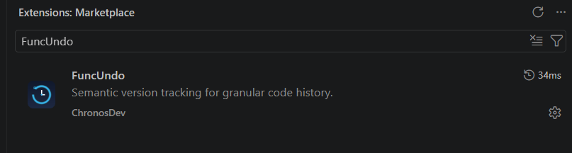

Getting Started
{/* Method 1: GUI */}
Installation Guide: How to Equip the Scalpel
Four painless ways to install FuncUndo in under 30 seconds.
Method 01 (Recommended)
VS Code GUI
Install via Extensions Marketplace
- Launch Visual Studio Code.
- Open Extensions view by clicking the block icon in the left Activity Bar or pressing Ctrl+Shift+X (or Cmd+Shift+X on macOS).
- In the search box, type
funcUndo. - Look for FuncUndo published by ChronosDev with the official blue-and-cyan clock symbol.
- Click the blue Install button.
VS Code Marketplace Search Result
Publisher: ChronosDev

✓
Official Release: ChronosDev
Semantic version tracking for granular code history
Method 02
Terminal / CLI
Run from PowerShell, Bash, or Command Prompt
$
code --install-extension chronos.funcundo
Method 03
VS Code Quick Open
Install via Quick Open Palette
Press Ctrl+P (or Cmd+P), paste ext install chronos.funcundo, and hit Enter.
Visual Indicator
● Activity Bar Dock
Where to Find FuncUndo in VS Code
◀
Look here: Clock Symbol
Click this clock-arrow symbol to toggle the Tracked Functions history explorer.
🎯 Verification: Your First 30 Seconds with FuncUndo
1. Open any .ts, .tsx, or .js file.
2. Look at the bottom status bar: you will see FuncUndo: Ready.
3. Edit a function, save, then press Ctrl+Alt+Z to watch only that function rewind!
Keybindings & Shortcuts
Press Ctrl+Alt+Z to undo function enclosing cursor. Press Ctrl+Alt+Y to redo with QuickPick branch selection.
What is FuncUndo?
FuncUndo is Git at the function level. It parses code into ASTs using WebAssembly in background threads, so you can rewind single functions without touching sibling code.
FuncUndo vs. The World
Why "just use Git" or "just hit Ctrl+Z" is advice given by people who don't refactor quickly.